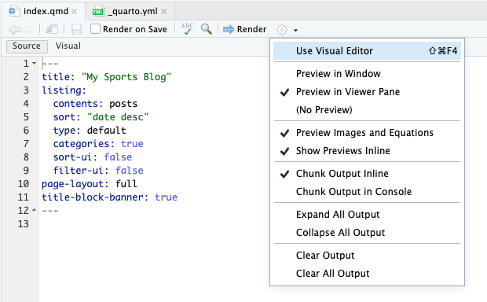
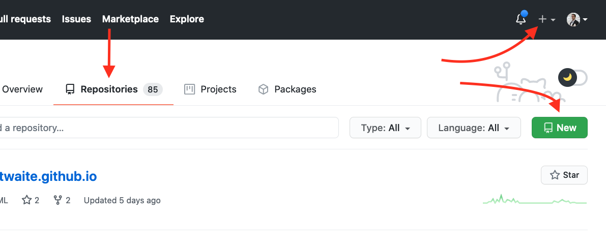
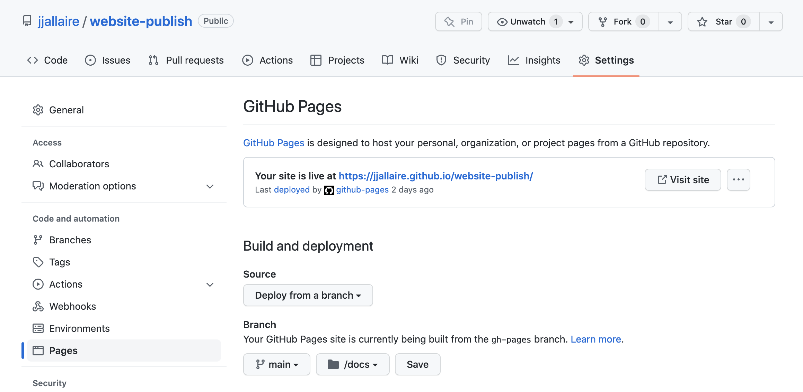
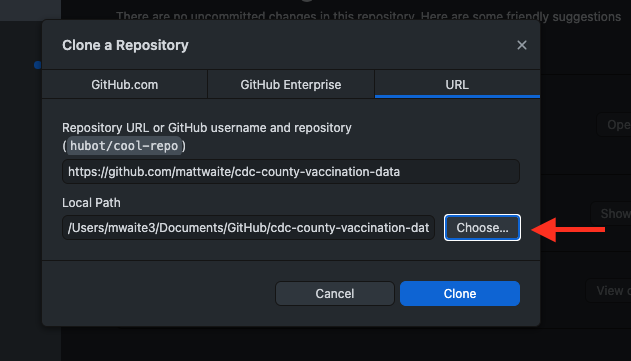
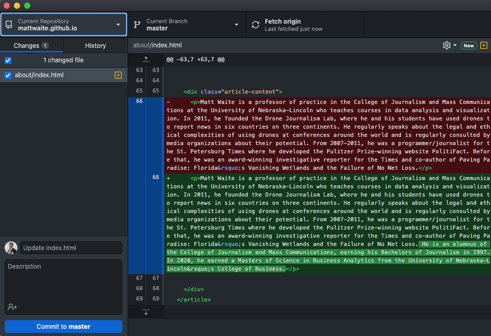
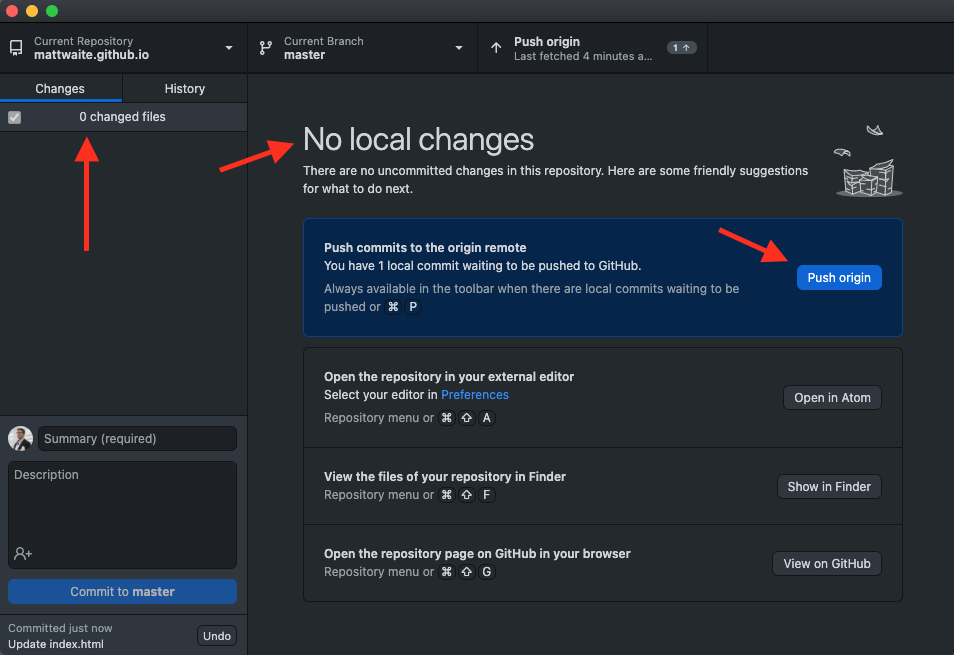

37 Building your own blog with Quarto
If you listen to the Measurables Podcast for about two episodes, you’ll detect a pattern. The host asks each guest how they got started in sports analytics. To a one, they’ll say they found public data and started blogging about their analysis of it. For nearly every single guest, this is their path into the field. They started messing around with data in a toolset, found something interesting and wrote a post about what they found and how they found it. Other analysts noticed it, or a hiring manager liked what they read, and the rest is history, as they say.
So, let’s do that. Let’s get you a blog so you can post your work.
Here’s our requirements:
- This doesn’t cost you anything.
- There’s zero maintenance work or upkeep. No servers to manage. No account to pay for.
- Since you’re going to be writing about your code, you should be able to create your blog posts in R Studio.
37.1 Setup
With those requirements in mind, we’re going to use a library called Quarto, which supercharges R Markdown to make documents, websites, blogs and books. It’s new, and growing, and you can do a lot with it.
You’ll first go to Quarto’s website and wait just one moment before you do anything.
Before you install Quarto, you should close R Studio. So close R Studio, install it, restart R Studio and come back to this tutorial. Then install Quarto.
After that, we’re ready to start making a blog. To do that, go to File > New Project and select New Directory, and follow the instructions here. In the Project Type view, you may have to scroll down to find “Quarto blog” but that’s the choice you want.
And now we’ve come to our first decision point.
First, name the directory you’re going to put this into. Keep it simple. Blog is fine. Then decide where on your computer you’re going to put it. Put it somewhere you’re going to remember. Don’t put it on your Desktop. Put it in a folder. Remember what folder because you’re going to need this later. Choose “None” as your engine and check the “Open in new session” box. Do NOT create a new repository at this point, then create the project.
When you hit Create Project, you should get an R Studio screen. You might have two files open – _quarto.yml and index.qmd. If you don’t, open them (you can use the files pane in the bottom right). The important one for now is _quarto.yml. This file will look different depending on some choices you make.
The choices you need to make:
- The website title should be yours.
- The Github account (more on this soon) and Twitter handles should be yours.
- If you want a custom favicon logo, you’ll have to include one. You can ignore this for a while.
- You should pick a not-default theme. If you want to have themes for light and dark mode, the code below handles that. If you want just one theme, the default code you get in your _quarto.yml file does that.
- Add the execute: freeze bits below to your file. This way, your code only executes when you change it. This will become more important later when you have multiple posts.
project:
type: website
website:
title: "Derek's Collection of Miscellany"
description: "A blog about random fiddling with code and data."
navbar:
right:
- about.qmd
- icon: github
href: https://github.com/dwillis
- icon: twitter
href: https://twitter.com/derekwillis
favicon: logo.png
format:
html:
theme:
light: litera
dark: cyborg
css: styles.css
editor: source
execute:
freeze: auto37.2 Creating a post
Under the files tab on the lower right, you’ll see a folder named posts. In there, you’ll find two folders with sample posts in them. There’s not much to them, but they’re useful to look at before we delete them.
To create a post, you’re going to first create a folder for it. The folder name matters because it’s going to be part of your url. For this to work your folder name has to do a couple of things:
- Contain only lowercase letters and dashes instead of spaces. So My Awesome Post will not work. It should be my-awesome-post.
- Contain words that are in your post, and would be something people would search for. If your post is about Maryland women’s run into the NCAA Tournament, make sure your post title and folder name contains those words.
- In other words, you need to think about what your post is about before you make this folder. Can you change it later? Yes. But the sooner you start focusing on a topic the better.
After you have created the folder, go to the button next to the create folder button and create a Quarto Document. Name that document index.qmd. DO NOT NAME IT CAPITAL I INDEX. IT’S LOWER CASE I.
At the top, you will have something called a yaml header, which are things that set up the page. They are quite simple to figure out. Here is an example you should copy and edit for all of your posts.
---
title: "CHANGE THIS TO BE THE TITLE OF YOUR POST"
author: "THIS IS YOUR NAME"
date: '2023-XX-XX'
categories: [lowercaseword, lowercaseword, lowercaseword]
image: "image.png"
format:
html:
code-fold: true
---For us, the cold-fold bit is important, and it is not standard. This will allow users to see your code that makes your graphics, without displaying it. Users can decide if they want to see the code.
Now that you have a folder and an index.qmd file with a proper yaml header, you’re ready to write your post. This document works just the same as any .qmd file we’ve worked with all semester. Create text between code blocks, and your code blocks will execute to produce graphics.
37.3 Seeing your site
While you are creating your site, you’re going to want to see it. Now’s a good time to introduce serving your site in R Studio so you can see it before you deploy it.
You can use the Render button in your editor to do that, and if you want to see it inside RStudio you can check the “Preview in Viewer Pane” from the drop-down menu just to the right of the Render button. Otherwise, the site will render in your browser locally.
37.4 Publishing your site
Quarto will take your .qmd files and create static html. What does static html mean? It means there’s no server creating it on the fly – that’s called dynamic html – so this can be hosted on the simplest of servers.
Publishing takes a lot of steps to get set up, but once it is, it’s easy.
Step 1: Get a GitHub account
Go to GitHub and sign up for an account. NOTE: Your username will be part of your website address, and you could potentially be sending this to employers. I’m sure blaze420rryday has been your handle since middle school, but do you want an employer to see that? My GitHub user name is dwillis See what I’m getting at here?
Step 2: Set up your website repository
For the low low price of nothing, GitHub will host a website for you, and we are going to take them up on that bargain. There’s several tricks to getting this to work, but none of them are hard. They just require you to be specific.
To start, you can click on the plus sign in the top right corner or hit the green new button, depending on what your page looks like vs mine (I’m reasonably active GitHub user, so mine will look different from yours).

In the create a new repository page, the name of your respository needs to follow this pattern: yourusernamehere.github.io where yourusernamehere is … your username. So my site is dwillis.github.io because my username is dwillis This is why you do not want to select swaggylovedoctor as your username, no matter how attached to it you are. Your employment chances are zero with something dumb like that.
After you’ve named the repository correctly, leave it public, check add .gitignore, and then select a gitignore template. Type R into the search, select it, and the create repository button will become active. Click create repository.
Finally, setup your repository so that it will publish your site every time you push updated or new files from the main branch. You can do that under “Settings”:

Step 3: (optional if you’re fine using the command line interface)
Don’t close your GitHub window.
In a new tab, download the GitHub Desktop App and install it.
GitHub is a version control system and a social network mixed together. Version control is like Track Changes in Word, but on steroids. If you plan on a career in analytics or data science, GitHub is a skill you will have to learn, but it’s beyond the scope of this book.
To work around this, we’re going to use GitHub Desktop to manage our interactions with GitHub. Open GitHub Desktop and log into your GitHub account in the app.
To get your repository into GitHub Desktop, go back to your tab with your GitHub repository in it. Find the Code button and click it. Click on the Open With GitHub Desktop button.
In the window that pops up, we need to set the Local Path. This path needs to be the same place your blog project is located. Click the Choose button and navigate to where your blog project is located. Then, just click Clone.

Step 4:
Let’s get your site on the internet.
Switch back to your blog project in R Studio. We’re going to output your site and upload it to GitHub.
To do this, we need to change config.yaml. We need to tell your website project that you want to publish to your GitHub folder, not the default.
Open _quarto.yml in your blog project. Near the top, below type: website, add this line:
output-dir: docsSave _quarto.yml.
Then, add a .nojekyll file to the root of your repository that tells GitHub Pages not to do additional processing of your published site using Jekyll (the GitHub default site generation tool). You can follow these instructions on how to do that.
Once you are ready to build your site, you can do so using the quarto render command via the Terminal and then git push (or using GitHub Desktop).
Step 5 (GitHub Desktop only)
Now go to the GitHub Desktop App. You should see something that looks like this, though yours will be different from mine.

This is where you will commit files to your repository. GitHub is a two-step process for getting files from your computer to GitHub. The first is committing the files. To do that, add a message in the box next to your avatar (where it says update index.html in the screenshot above). Then click Commit to main (mine says master because it’s an older repository before GitHub switched to using main by default). The second step is to push it to GitHub. You do that on the screen that appears after you have committed your files. It should say you have No Local Changes, which is good because you sent them to GitHub. Now click Push origin.

In a few minutes, you should be able to go to username.github.io in a browser and you’ll see your site.